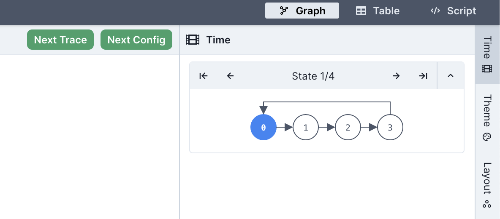
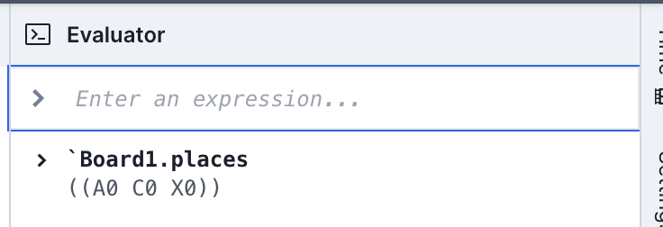
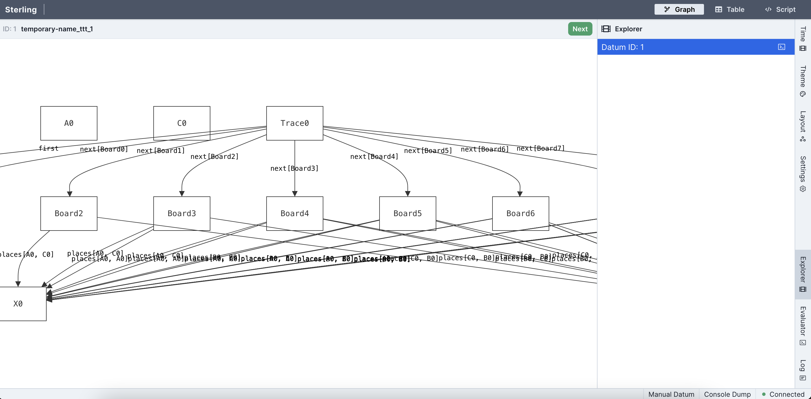
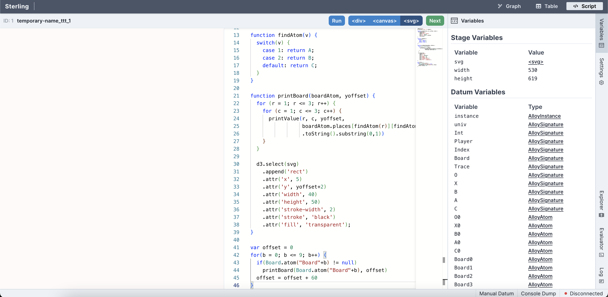
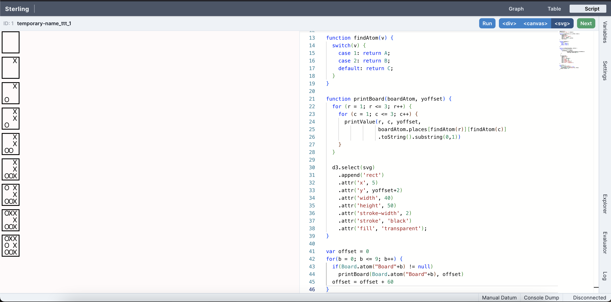

Visualizing and Evaluating Output¶
Forge uses a modified version of the Sterling model visualizer.
Visualizing Output¶
When you execute your model, Forge will either look for instances that satisfy the predicates you wrote, or look for counterexamples to the assertion you wrote. If you used a run command, or if Forge found a counter-example to a test, example, or assert you wrote, Forge launches a window in your browser that displays the output. (See the run and check sections for the different displays Sterling has in various scenarios.)
The basic visualization of the model is a directed graph showing all the atoms in that instance and the relations between them. You can also view an alternate depiction of the instance in the table view tab. To keep visualizations neat, Sterling will not show you any Int atoms that are not used in the instance.
Theming¶
The directed-graph view can be customized by clicking the Theme tray to the right of the Sterling window. Sterling supports two kinds of theming, listed below.
Saving a theme
You can save your theme in a file and re-load it later in a new session. To do this, click the "Save As..." or "Choose File" options at the very top of the theming tray. The file will be downloaded as theme.json.
If you get a fresh instance and lose your theming, reloading a saved theme is a fast fix.
Projections¶
Projecting over a sig hides atoms of that sig in the visualizer and shows the rest of the instance as if that were the only atom of the projected sig. This can be a very useful for simplifying (e.g.) finite-trace instances, since much of the clutter will be eliminated. When a projection is active, the theming window will give the option to change which atom is being used.
Styles¶
Style attributes such as font and line thickness for each sig and field can be customized. For fields only, clicking the "display as attribute" checkbox will tell Sterling to stop visualizing the field as an edge in the graph, and display it as an annotation on nodes.
Clicking a sig or field name will expand the style selection box for that sig or field. Click the name again to collapse the box.
Changing source and target nodes
The default graph layout can sometimes be frustrating. For example, if you are modeling a weighted directed graph, you may have something like sig Node { edges: set Node -> Int }. By default, Sterling will display each tuple in edges as an edge from the first tuple element to the last tuple element, meaning that you'll see a lot of arcs from nodes to numbers.
To fix this, set the "Source Index" and "Target Index" fields in the styling for a given field. In the above case, you would want a source index of 0 and a target index of 1; Sterling would then move the weight to an edge label, resulting in a much more readable graph.
Visualizing in Temporal Forge¶
In temporal mode, when the trace found is of length greater than 1, Sterling will enable a few new features:
- You can advance back and forth through the trace by using the arrow buttons in the
Timedrawer. Next to these buttons, Sterling will say which state the lasso loops back to. For instance, "Loop: 1" would mean that the lasso loops back to the second state (states are 0-indexed). - Rather than one "Next" button, you'll see two: one labeled "Next" and the other "Next Config".
- The "Next Config" button will ask the solver for a new trace that varies the non-variable relations of your model. If all your relations are variable, or if other constraints prevent a different non-variable subset of the instance from satisfying your run, this button will lead to a no-more-instances screen.
- The "Next" button will ask the solver for a new trace that holds the non-variable relations constant. If there are no other traces possible without changing the non-variable relations, this button will lead to a no-more-instances screen.

The Evaluator¶
The evaluator provides a prompt that lets you query instances with Forge expressions. You can open the evaluator by clicking the "Evaluator" drawer on the far right of the Sterling window. Type a Forge expression and the evaluator will return its value in the current instance (assuming that Forge is still running). E.g.:

Because the evaluator works with respect to a single instance, exact values of expressions are returned. These expressions are (as of January 2024) not always Forge syntax. E.g., relations are displayed using nested parentheses, and false is written as #f. Fields are displayed in row form, with every entry in the field grouped into a parenthesis; in the example above, the meaning is that there's only one move on the board: X moved at row A, column C.
Atoms can be referenced
Individual atoms can be directly referenced by name in the evaluator, like in inst blocks (remember to prefix atom names with a backquote!) E.g., in the above example, `Board1 was an atom name.
The Evaluator in Temporal Forge¶
If running in temporal mode, the evaluator is run in the context of the first state of the trace shown. To ask about later traces, use the ' or next_state operators. Remember that next_state applies to formulas, and ' applies to relational expressions. So in a directed graph you could ask whether there are edges in the second state via some edges' or after some edges.
Custom Visualizations: Script View¶
Sterling also allows you to write and run scripts that produce your own custom visualizations. This documentation site contains a basic example here: - example visualization script - Tic-tac-toe model to run the script with
If you want to try out this example, do the following:
Step 1: Open the Forge model and run it (racket ttt.frg). Sterling should open in your web browser, defaulting to the directed-graph visualization---which isn't very useful for this model. You should see something like this:

Step 2: Click the Script button on the upper-right of the window. This will switch to custom script view mode. Paste the script into the editor, then click the Run button. You should see something like this before clicking Run:

Drawers
If you don't like the "Variables" tab taking up space, just click the corresponding drawer on the far right. The tab should collapse, making more room for the editor and visualization area.
After running, you should see something like this, with a sequence of board states displayed on the left-hand side of the screen:

More Information¶
For more complex examples, library documentation, instructions on writing your own visualizers, etc. see Custom Visualizations.